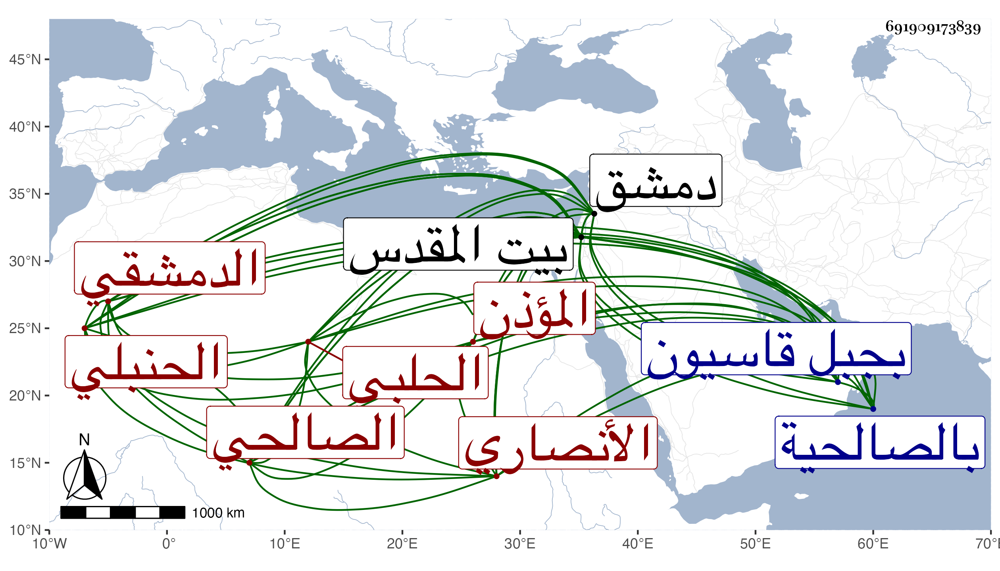

0902Sakhawi.DawLamic.ITO20230111-ara1.EIS1600.691909173839
Biography ID: 691909173839
106
أحمد بن علي بن محمد بن محمد بن محمود بن عبادة بالفتح الشهاب الأنصاري الحلبي ثم الدمشقي الصالحي الحنبلي المؤذن ويعرف بابن الشحام بمعجمة ثم مهملة مثقلة ولد في يوم الجمعة قبيل الصلاة خامس عشري المحرم سنة إحدى وثمانين وسبعمائة بدمشق ونشأ بها فقرأ القرآن على أبيه والفخر العجلوني وغيرهما والعمدة للموفق بن قدامة وحضر في الفقه عند العلاء بن اللحام بل حضر مواعيد الزين بن رجب والجمال العرجاوي وسمع الحديث على الكمالين ابن النحاس وابن عبد الحق والحسن بن محمد بن أبي الفتح البعلي وأبي حفص البالسي ، وآخرين وحدث ببلده وبيت المقدس وغيرهما سمع منه الفضلاء ، وحملت عنه بالصالحية وكفر بطنا أشياء وكان خيرا منورا محبا في الحديث باشر مشيخة الكهف والإمامة بجبل قاسيون والأذان بجامع بني أمية وحج مرتين وزار بيت المقدس ، ومات هناك في إحدى الجمادين سنة أربع وستين ودفن بمقبرة الزاهرة .
